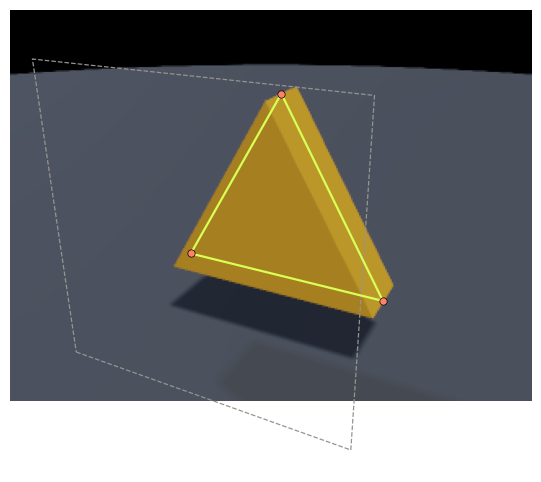
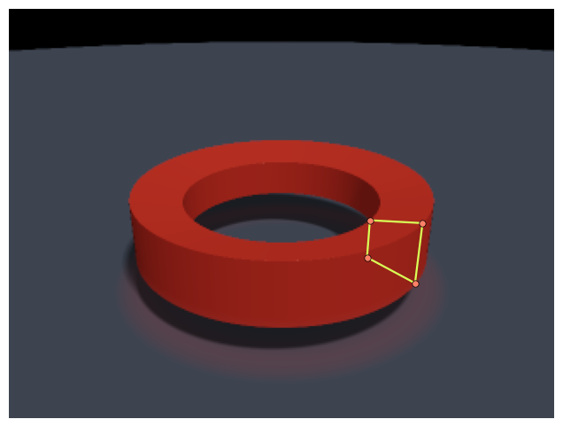
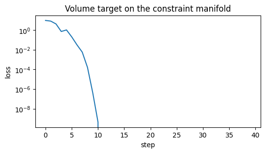
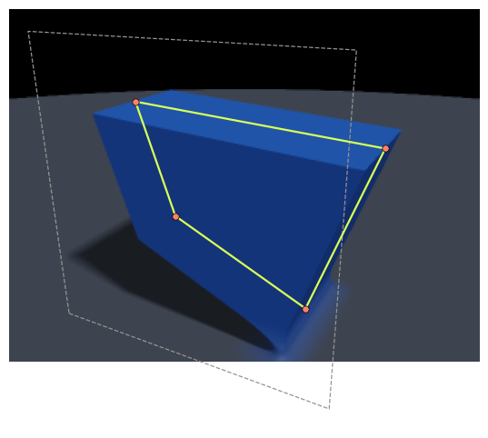

import jax
import jax.numpy as jnp
import matplotlib.pyplot as plt
from cadjoint import apply_parameters, extract_parameters, functionalize
from cadjoint.constraints import DistanceConstraint, FixedConstraint
from cadjoint.constraints.solve import project_to_manifold, solve_constraints
from cadjoint.construction import PolygonProfile, SketchPlane, extrude, revolve
from cadjoint.render import (
Camera,
Material,
RenderSettings,
Scene,
draw_plane,
draw_profile,
render_scene,
)
from cadjoint.sdf import volume
from cadjoint.sdf.primitives import PlaneSketch → constrain → solve → solid
cadjoint models CAD workflows with two trees sharing one set of parameters:
- the construction tree — sketch planes and 2D profiles whose vertices are free
Vector2parameters. This is what you edit and constrain. - the SDF tree — solids generated from profiles (
extrude,revolve). Generation preserves parameter references, so solving constraints on the sketch, or running gradients through the solid, act on the same values.
The construction tree is never part of the SDF render; it is projected through the same camera and drawn as a wireframe overlay.
1. Sketch a profile
A PolygonProfile lives on a SketchPlane. Raw vertex arrays become free Vector2 parameters (2 DOF each) — editable until constrained, like a CAD sketch.
profile = PolygonProfile(
[[0.1, -0.1], [1.9, 0.2], [1.0, 1.5]],
plane=SketchPlane(origin=[0.0, -0.5, 0.0], normal=[0.0, 0.0, 1.0]),
name="tri",
)
profile.vertices[Vector2(value=Array([ 0.1, -0.1], dtype=float32), free=True, name='tri_v0', bounds=None),
Vector2(value=Array([1.9, 0.2], dtype=float32), free=True, name='tri_v1', bounds=None),
Vector2(value=Array([1. , 1.5], dtype=float32), free=True, name='tri_v2', bounds=None)]2. Constrain and solve
Anchor two vertices and pin the apex with two distance constraints: 6 DOF, 6 constraint equations — exactly constrained. solve_constraints walks the construction tree, finds the constraints registered on its parameters, and solves with Levenberg–Marquardt. The solution lands on an equilateral triangle.
v0, v1, v2 = profile.vertices
FixedConstraint(v0, [0.0, 0.0])
FixedConstraint(v1, [2.0, 0.0])
DistanceConstraint(v0, v2, 2.0)
DistanceConstraint(v1, v2, 2.0)
solved = solve_constraints(profile)
for name, value in solved.items():
print(f"{name}: {value}")tri_v0: [-9.3816510e-11 -1.6287771e-10]
tri_v1: [2.000000e+00 1.165148e-10]
tri_v2: [1. 1.7320509]3. Generate a solid and render with the sketch overlay
extrude produces an SDF primitive that shares the profile’s vertex parameters and places it on the sketch plane. We render the solid with the forward renderer, then draw the construction tree on top: dashed plane outline, profile edges, vertex handles.
solid = extrude(profile, depth=0.6, material=Material(color=[0.9, 0.55, 0.08], roughness=0.35))
scene = Scene(
solid | Plane(-1.2, material=Material(color=[0.12, 0.14, 0.18], roughness=0.8)),
camera=Camera(position=(3.2, 2.4, 4.6), target=(0.9, 0.2, 0.0), fov=0.42),
light_directions=((0.4, 1.0, 0.5), (-0.5, 0.4, -0.3)),
light_colors=((1.3, 1.2, 1.05), (0.25, 0.3, 0.45)),
)
settings = RenderSettings.balanced((240, 320))
# write solved values back into the shared params: the render below uses
# the constraint-solved sketch
apply_parameters(profile, solved)
image = render_scene(scene, settings)
fig, ax = plt.subplots(figsize=(8, 6))
ax.imshow(image)
draw_plane(ax, profile.plane, scene.camera, settings.resolution, extent=1.8)
draw_profile(ax, profile, scene.camera, settings.resolution)
ax.axis("off");
4. Revolve
The same profile machinery drives solids of revolution. Profile coordinates are (radial, height); the profile revolves around the sketch plane’s local Y axis.
washer = PolygonProfile([[0.9, -0.18], [1.35, -0.28], [1.35, 0.28], [0.9, 0.18]], name="washer")
ring = revolve(washer, material=Material(color=[0.78, 0.08, 0.05], roughness=0.4))
ring_scene = Scene(
ring | Plane(-0.6, material=Material(color=[0.12, 0.14, 0.18], roughness=0.8)),
camera=Camera(position=(2.6, 2.2, 3.8), target=(0.0, 0.0, 0.0), fov=0.5),
)
image = render_scene(ring_scene, settings)
fig, ax = plt.subplots(figsize=(8, 6))
ax.imshow(image)
draw_profile(ax, washer, ring_scene.camera, settings.resolution)
ax.axis("off");
5. Constrained optimization through the generated solid
The full differentiable-CAD loop: a quad sketch with one anchor and one pinned edge length (3 constraint equations on 8 DOF), extruded into a solid. We optimize the remaining sketch DOF so the solid’s volume hits a target, and project back onto the constraint manifold after every gradient step.
quad = PolygonProfile([[0.0, 0.0], [2.0, 0.0], [2.0, 1.0], [0.0, 1.0]], name="quad")
q0, q1, q2, q3 = quad.vertices
FixedConstraint(q0, [0.0, 0.0])
DistanceConstraint(q0, q1, 2.0)
quad_solid = extrude(quad, depth=1.5, material=Material(color=[0.05, 0.2, 0.7], roughness=0.3))
free, fixed, meta = extract_parameters(quad_solid)
fn = functionalize(quad_solid)
target = 6.0
def loss(params):
vol = volume(fn(params, fixed), bounds=(-1, -1, -1), size=(4, 4, 2), resolution=32)
return (vol - target) ** 2
params = dict(free)
history = []
for _ in range(40):
value, grads = jax.value_and_grad(loss)(params)
history.append(float(value))
params = {k: v - 0.05 * grads[k] for k, v in params.items()}
params = project_to_manifold(params, meta, steps=2)
vol = volume(fn(params, fixed), bounds=(-1, -1, -1), size=(4, 4, 2), resolution=64)
print(f"final volume: {float(vol):.3f} (target {target})")
print(
f"edge length: {float(jnp.linalg.norm(params['quad_v1'] - params['quad_v0'])):.4f} (pinned 2.0)"
)
plt.figure(figsize=(6, 3))
plt.semilogy(history)
plt.xlabel("step")
plt.ylabel("loss")
plt.title("Volume target on the constraint manifold");final volume: 6.278 (target 6.0)
edge length: 2.0000 (pinned 2.0)
6. Optimized solid with its sketch
apply_parameters is the inverse of extract_parameters: it writes a name-keyed value dict back into the tree’s free parameters. Since the solid and the sketch share their parameters, applying to either updates both — the overlay below shows the final constrained profile driving the solid.
apply_parameters(quad, params)
quad_scene = Scene(
quad_solid | Plane(-1.0, material=Material(color=[0.12, 0.14, 0.18], roughness=0.8)),
camera=Camera(position=(3.6, 2.8, 5.0), target=(1.0, 0.6, 0.0), fov=0.45),
)
image = render_scene(quad_scene, settings)
fig, ax = plt.subplots(figsize=(8, 6))
ax.imshow(image)
draw_plane(ax, quad.plane, quad_scene.camera, settings.resolution, extent=2.2)
draw_profile(ax, quad, quad_scene.camera, settings.resolution)
ax.axis("off");
Everything above is one parameter set: the constraint solver, the optimizer, the SDF renderer, and the overlay all read and write the same Vector2 objects. Next steps for this workflow: sketch-on-face datums (deriving a SketchPlane from an existing solid’s geometry), more 2D entities (arcs, fillets via smooth booleans), and interactive vertex dragging in the WebGPU playground.